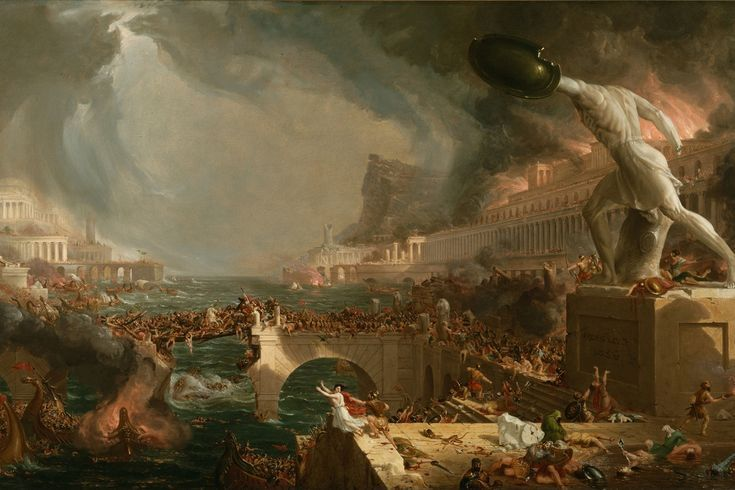
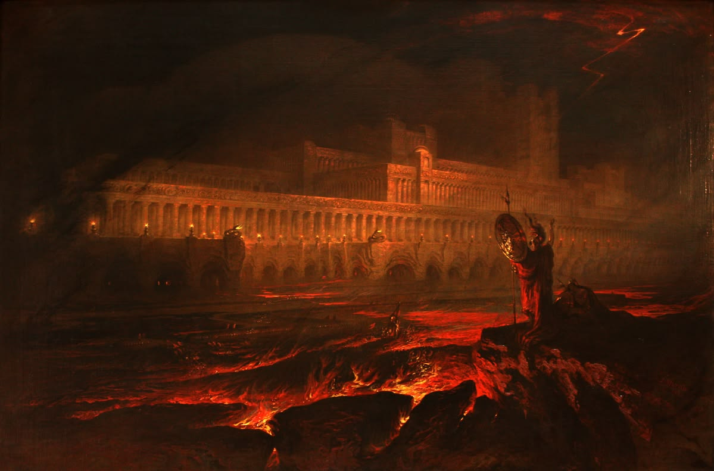
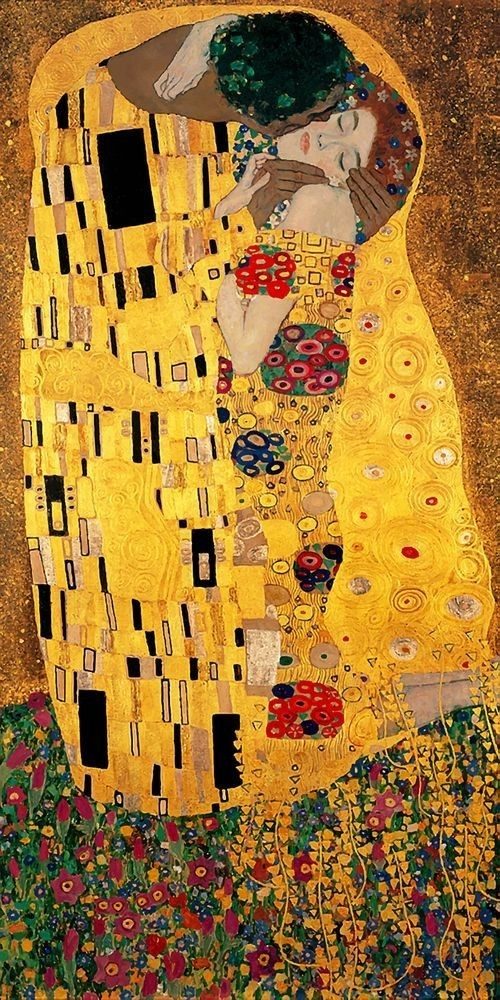
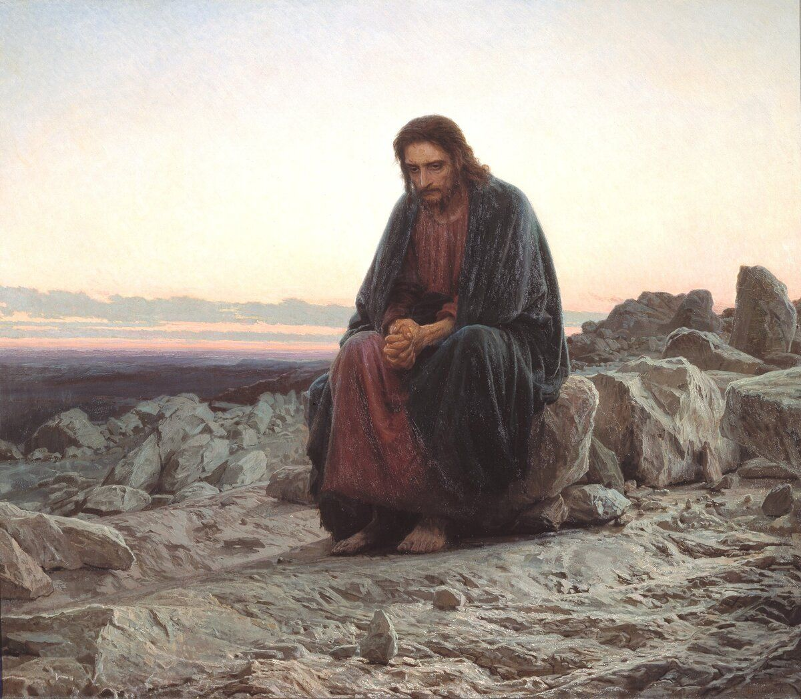
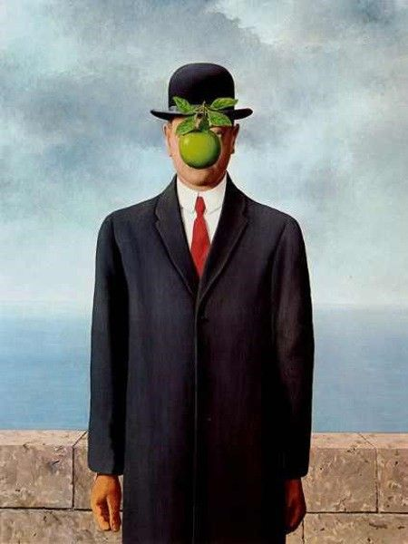
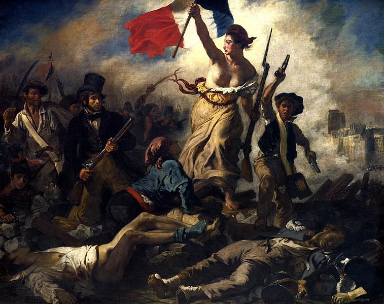

Uma imagem idealizada da travessia dos Alpes. Nas pedras, o nome Bonaparte aparece gravado ao lado de Karolus Magnus (Carlos Magno), associando-o a outros conquistadores que passaram pelos Alpes.
O Percurso do Império: Destruição

Thomas Cole, O Percurso do Império: Destruição, 1836. New-York Historical Society. Domínio público.Ver ficha técnica
Artista
Thomas Cole
Ano
1836
Técnica
Óleo sobre tela
Sobre
Quarta tela da série de cinco O Percurso do Império (1833–1836), que acompanha o nascimento, o auge e a queda de uma cidade imaginária.
Pandemonium

John Martin, Pandemonium, 1841. Museu do Louvre, Paris. Domínio público.Ver ficha técnica
Artista
John Martin
Ano
1841
Técnica
Óleo sobre tela
Sobre
Inspirada no poema Paraíso Perdido, de John Milton: o palácio dos demônios surge de repente sobre um mar de lava.
O Beijo

Gustav Klimt, O Beijo (recorte vertical), 1907–1908. Óleo sobre tela com folha de ouro. Österreichische Galerie Belvedere, Viena. Domínio público (o artista morreu em 1918).Ver ficha técnica
Artista
Gustav Klimt
Período
1907–1908
Técnica
Óleo sobre tela com aplicação de folha de ouro
Local
Galeria Belvedere, Viena
Sobre
Obra-símbolo do Simbolismo e da Secessão de Viena, feita na chamada “fase dourada” do artista. Os padrões geométricos do manto do homem contrastam com as flores do vestido da mulher.
Cristo no Deserto

Ivan Kramskoi, Cristo no Deserto, 1872. Óleo sobre tela. Galeria Tretyakov, Moscou. Domínio público (o artista morreu em 1887).Ver ficha técnica
Artista
Ivan Kramskoi
Ano
1872
Técnica
Óleo sobre tela
Local
Galeria Tretyakov, Moscou
Sobre
Obra do Realismo russo que mostra Cristo em meditação durante os quarenta dias no deserto, um momento de dúvida e de decisão retratado de forma humana e silenciosa.
O Filho do Homem

René Magritte, O Filho do Homem (Le fils de l’homme), 1964. Óleo sobre tela. Coleção particular. Obra ainda protegida por direitos autorais (o artista morreu em 1967): direitos reservados ao espólio de René Magritte. Imagem em baixa resolução, exibida neste trabalho escolar apenas com fins educacionais e de citação.Ver ficha técnica
Artista
René Magritte
Ano
1964
Técnica
Óleo sobre tela
Local
Coleção particular
Sobre
Um dos ícones do Surrealismo belga: a maçã esconde o rosto e deixa o espectador querendo ver o que está por trás dela. O próprio artista dizia que tudo o que vemos esconde outra coisa.
A Liberdade Guiando o Povo

Eugène Delacroix, A Liberdade Guiando o Povo, 1830. Óleo sobre tela. Museu do Louvre, Paris. Domínio público (o artista morreu em 1863).Ver ficha técnica
Artista
Eugène Delacroix
Ano
1830
Técnica
Óleo sobre tela
Local
Museu do Louvre, Paris
Sobre
Obra-chave do Romantismo francês, inspirada na Revolução de Julho de 1830. A figura feminina simboliza a Liberdade, e a bandeira tricolor lidera o povo de todas as classes.